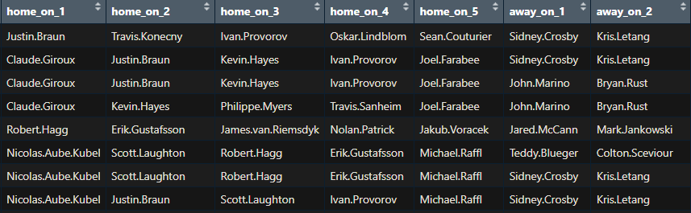
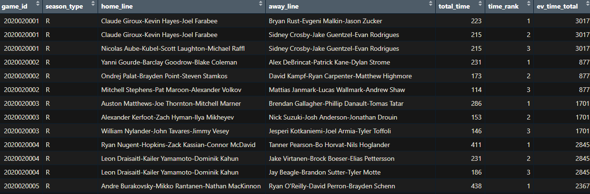

| Season Type | Most Used | Second Most | Third Most |
|---|---|---|---|
| Playoffs | 12.47% | 8.75% | 6.80% |
| Regular Season | 12.00% | 8.73% | 6.97% |
A recent tweet thread from Micach Blake McCurdy, one of the foremost practitioners of public-facing hockey analysis, sparked an idea that I thought was worth researching. Micah was looking at rolling out a matchups visualization, where the primary matchups between opposing forward lines were displayed (at even strength) and included the total time of the matchup and the xG generated by each side. He noted that this is a difficult part of the game to visualize because the most common matchups in a given game do not take up a large percentage of the total ice-time. He followed that thought up with an inquiry of whether this exercise would be more useful come playoff time. I thought this would be worthwhile question to research. We hear a lot of talk from pundits and analysts that in the playoffs coaches are able to more heavily scout their opponents and correspondingly are much more particular in the matchups they want to see deployed. Does that sentiment hold up to scrutiny?
I collected the play-by-play data from all regular season and postseason games in the 2021 through the 2023 season at 5v5 using the invaluable hockeyR package. I created shift stints by segmenting the data based on the five players players on the ice for each side. When one of the ten players left the ice, a new shift index would be created and a new shift would start. Following the shift segmentation, I grouped the data by shift and calculated the shift length in seconds.

I pulled player information from Natural Stattrick to get player positions because I was interested in isolating the forwards who were on the ice for each shift. With the name and position information in tow, I could join to the shift table and pick out who were the forwards for each team at any given time. I then isolated the forwards on the ice for each team and pulled them out to create a new table. For every set of forward line pairs opposing each other, I calculated the total time they spent playing against each other in each game. I also calculated the total amount of relevant ice time in each game, so I could calculate the percentage of the time tracked that a matchup was on the ice. The data looked as follows at this point:

I defined the primary matchups as the top three forward line matchups in a game. This was an arbitrary selection, but I am skeptical that the conclusions drawn would fundamentally change if that number were two, four, or five. Before I report the results I want to make a couple of notes. The first is that the “relevant” data I reference met the following criteria: five skaters on the ice for each team, three skaters were forwards, and two were defensemen. There were points in time when there would be four forwards out on the ice, often when powerplays expired or there was a weird line change where something happened when four forwards happened to be on the ice. I did not include those instances in the analysis nor in my calculation of the total ice time. Furthermore, there were also instances where certain player slots (i.e. home player 1, 2, 3, etc) were left blank. I was not sure how to properly remedy these holes in the data, so I left the shifts where there was a missing player(s) out of both the collection of matchups and the calculations of the total time. By removing these two quirks in the data from both the primary matchup calculations and the total relevant time calculations, I figured these instances would wash out without comprising the integrity of the analysis. If anyone has any suggestions on how to deal with the missing data, I am all ears and could definitely rerun the code.
Now for the most interesting part: are players deployed in a more pointed manner in the playoffs relative to the regular season? The answer, to my surprise, seems to be no.
There is functionally no difference. The main matchup sees about half a percentage point more ice time, the second most common matchup is unchanged, and the third most used matchup actually sees almost a fifth of a percentage point more time in the regular season. I thought this could be some artifact of most shift stints being on the fly, where coaches have less control of against whom they deploy their players. One coach has the ability to deploy his players after he sees who the opposition ices before a faceoff. I thought this was something worth checking for. I filtered the shift stints data to only include shifts that started with a faceoff and re-ran the analysis and did not see any differences in results.
| Season Type | Most Used | Second Most | Third Most |
|---|---|---|---|
| Playoffs | 21.58% | 13.81% | 10.22% |
| Regular Season | 20.66% | 13.67% | 10.46% |
The primary matchups take up a larger percentage of the shifts that start off with faceoffs in both the regular season and the playoffs but in terms of deviations there is virtually no change. Not the most exciting result. Player deployment based on matchups seems to not meaningfully change from the regular season to the postseason. Whatever combination of variables that coalesce into player ice time and the matchups we see might just be the same across game types. That is not to say that coaching staffs and front offices do not conduct more focused scouts of their playoff components compared to the regular season. That effort must manifest itself in a different way, most likely in tactical decisions in how to approach forechecks for/against, transition through the neutral zone, shot generation in the offensive zone, etc. But I think it is safe to say, until proven otherwise, that coaches do not try to match players up any differently in the playoffs than in the regular season and any analysis that suggests otherwise should be taken with a grain of salt.